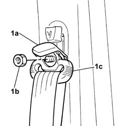
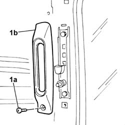

7065A16 FRONT SEAT BELT HEIGHT ADJUSTER TRIM, LEFT OR RIGHT - R.R .
- Path
- Procedures > 70 FITTINGS > 7065 SEAT BELTS AND ACCESSORIES > 7065A FRONT SEAT BELTS > 7065A16 FRONT SEAT BELT HEIGHT ADJUSTER TRIM, LEFT OR RIGHT - R.R .
- Kind
- repair procedure (removal / refitting; the operation number is the code)
- Applies to
- all engines; all production periods
- Interactive page
- https://sloeber94.github.io/elrnDB-fDbl/en/#/2585228
Applies to: all engines; all production periods; only with equipment: Cargo trim level
 Removing
Removing
 Refitting
Refitting1. Open plastic protection (1a), undo retaining nut (1b) and place front seat belt upper link (1c) to one side.

Applies to: all engines; all production periods; only with equipment: Cargo trim level
1. Undo the bolt (1a) and remove the trim (1b).

Applies to: all engines; all production periods; only with equipment: Cargo trim level
Refitting
RemovingFit the trim and secure with a bolt.
Fit the upper front seat belt link and secure to the height adjuster by tightening the nut to torque.
 | Fastening | Component | Ø | Value (daNm) |
|---|---|---|---|---|
- | Nut | FRONT SEAT BELT | M7/16" | 4 |
Close the front seat belt upper link nut plastic protection.